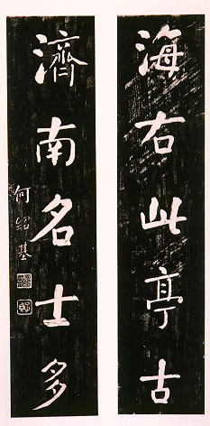

義助慰安婦 —— 李敖百件珍藏義賣藝術品（第28件） 品 名： B5. 何紹基聯拓片 預估價： 4 萬 成交價： 4 萬 說 明： 這是清朝名書法家兼文字學家何紹基所寫對聯的拓本。從內文「海右此亭古，濟南名士多」可知是大明湖地區有關的對聯，對仗極為工整。何紹基活到五十七歲，一生為人寫對聯逾數千對，卻無一是重覆之作，為其了不起的特色。 
這是清朝名書法家兼文字學家何紹基所寫對聯的拓本。從內文「海右此亭古，濟南名士多」可知是大明湖地區有關的對聯，對仗極為工整。何紹基活到五十七歲，一生為人寫對聯逾數千對，卻無一是重覆之作，為其了不起的特色。